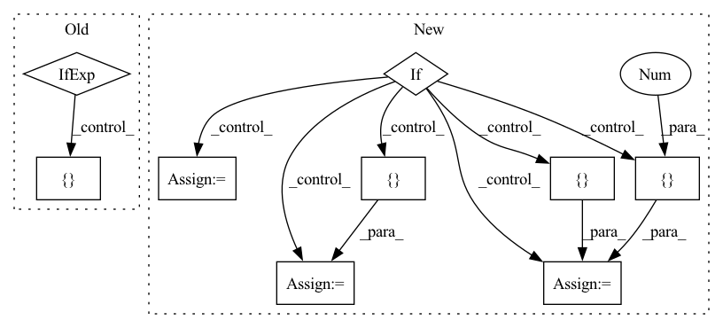

Pattern ID :5814
Before Change
name = _get_name(is_aff_model)
tags = ["u-net", "cell-segmentation", "htm", "high-throughput-microscopt", "segmentation", "cells",
"covid-antibody-test", "covid-19", "sars-cov-2", "immunofluorescence"]
tags += ["boundary-prediction"] if is_aff_model else [ "affinity-prediction"After Change
cite["segmentation algorithm"] = covid_if_pub
doc = _get_doc(is_aff_model, checkpoint, name)
if is_aff_model:
offsets = [
[-1, 0], [0, -1],
[-3, 0], [0, -3],
[-9 , 0[ -27, 0 = {"mws": {"offsets": offsets}}
else:
config = {}
if additional_formats is None:
additional_formats = []
In pattern: SUPERPATTERN
Frequency: 3
Non-data size: 9
Instances Fragment ID: 20515403
Project Name: constantinpape/torch-em
Commit Name: 5780bd3c9261f68965a2d26f642c5f6d7f510ed9
Time: 2021-12-07
Author: constantin.pape@embl.de
File Name: experiments/covid-if/export_bioimageio_model.py
M Class Name: AnonimousClass
N Class Name: AnonimousClass
M Method Name: export_to_bioimageio(5)
N Method Name: export_to_bioimageio(5)
M Parent Class:
N Parent Class:
M File Name: experiments/covid-if/export_bioimageio_model.py
N File Name: experiments/covid-if/export_bioimageio_model.py
M Start Line: 50
M End Line: 72
N Start Line: 79
N End Line: 115
Before Change
tags = ["u-net", "mitochondria-segmentation",
"segmentation", "mito-em", "mitochondria"]
tags += [ "boundary-prediction" if is_aff_model else ["affinity-prediction"]
cite = get_default_citations(
model="AnisotropicUNet",After Change
is_aff_model = False
name, desc = _get_name_and_description(is_aff)
if is_aff_model:
offsets = [
[-1, 0, 0], [0, -1, 0], [0, 0, -1],
[-2, 0, 0], [0, -3, 0], [ 0, 0, -3[0 , -9, 0 = { "mws": {"offsets": offsets}}
else:
config = {}
cite = get_default_citations(
model="AnisotropicUNet", Fragment ID: 20515388
Project Name: constantinpape/torch-em
Commit Name: 1928bde5678b710f40748422e066826657b4633d
Time: 2021-12-16
Author: c.pape@gmx.net
File Name: experiments/mito-em/export_bioimageio_model.py
M Class Name: AnonimousClass
N Class Name: AnonimousClass
M Method Name: export_to_bioimageio(5)
N Method Name: export_to_bioimageio(5)
M Parent Class:
N Parent Class:
M File Name: experiments/mito-em/export_bioimageio_model.py
N File Name: experiments/mito-em/export_bioimageio_model.py
M Start Line: 82
M End Line: 98
N Start Line: 81
N End Line: 108
Before Change
gpu_ids = [] if not torch.cuda.is_available() else [1]
elif mode == "test":
nprocesses = 1
gpu_ids = [] if not torch.cuda.is_available() else [0]
else:
raise NotImplementedError("mode must be "train", "valid", or "test".")
After Change
gpu_ids = [torch.cuda.device_count()]
elif mode == "test":
nprocesses = 1
if not torch.cuda.is_available():
gpu_ids = []
elif torch.cuda.device_count() == 1:
gpu_ids = [0 ]
elif torch.cuda.device_count() > 1:
gpu_ids = [ torch.cuda.device_count() Fragment ID: 20515398
Project Name: allenai/allenact
Commit Name: 446a8e040e4777383edf7d77f9747d6cdae56702
Time: 2020-02-12
Author: klemenk@ip-172-16-3-136.us-west-2.compute.internal
File Name: experiments/pointnav_habitat_rgb_deterministic.py
M Class Name: PointNavHabitatRGBDeterministicExperimentConfig
N Class Name: PointNavHabitatRGBDeterministicExperimentConfig
M Method Name: machine_params(2)
N Method Name: machine_params(2)
M Parent Class: ExperimentConfig
N Parent Class: ExperimentConfig
M File Name: experiments/pointnav_habitat_rgb_deterministic.py
N File Name: experiments/pointnav_habitat_rgb_deterministic.py
M Start Line: 123
M End Line: 126
N Start Line: 123
N End Line: 137